ConcursoRadar — Justiça Eleitoral — TRE / TSE
Biblioteca de Anúncios da Meta · 07/10/2026 18:49 · anúncios ativos há 7+ dias · 59 oferta(s) descartada(s) por não citarem concurso
Padrões dos anúncios
Base: 231 anúncios de 86 anunciantes; 108 no ar há 45+ dias (veteranos). Anunciantes = quantos produtores distintos usam a categoria. Veteranos = quantos desses anúncios passaram de 45 dias e, entre parênteses, a fatia da categoria entre todos os veteranos. Se essa fatia é maior que a fatia em Anúncios, a categoria aparece mais entre os que duram. Com 1 ou 2 anunciantes é caso isolado. A coleta junta duas amostras por busca (7+ e 45+ dias), então o total de veteranos não é taxa de sobrevivência.
Formato do criativo
Vídeo, imagem única ou carrossel.
| Categoria | Anunciantes | Anúncios | Mediana de dias | Veteranos |
|---|---|---|---|---|
| vídeo | 43 (50%) | 91 (39%) | 57 | 60 (56%) |
| imagem | 38 (44%) | 109 (47%) | 10 | 34 (31%) |
| carrossel | 20 (23%) | 31 (13%) | 29 | 14 (13%) |
Proporção do criativo
Vertical (4:5 ou 9:16), quadrada (1:1) ou horizontal.
| Categoria | Anunciantes | Anúncios | Mediana de dias | Veteranos |
|---|---|---|---|---|
| vídeo vertical | 42 (49%) | 90 (39%) | 57 | 59 (55%) |
| imagem vertical | 31 (36%) | 92 (40%) | 10 | 23 (21%) |
| carrossel vertical | 19 (22%) | 28 (12%) | 43 | 14 (13%) |
| imagem quadrada | 9 (10%) | 17 (7%) | 50 | 11 (10%) |
| carrossel quadrada | 3 (3%) | 3 (1%) | 8 | 0 (0%) |
| vídeo quadrada | 1 (1%) | 1 (0%) | 76 | 1 (1%) |
Duração dos vídeos
Só anúncios em vídeo.
| Categoria | Anunciantes | Anúncios | Mediana de dias | Veteranos |
|---|---|---|---|---|
| 1 a 2min | 19 (44%) | 26 (29%) | 52 | 14 (23%) |
| 31s a 1min | 18 (42%) | 42 (46%) | 57 | 32 (53%) |
| Mais de 2min | 11 (26%) | 12 (13%) | 51 | 7 (12%) |
| Até 30s | 6 (14%) | 11 (12%) | 88 | 7 (12%) |
Botão (CTA)
Rótulo do botão exibido no anúncio.
| Categoria | Anunciantes | Anúncios | Mediana de dias | Veteranos |
|---|---|---|---|---|
| sem botão | 37 (43%) | 73 (32%) | 29 | 35 (32%) |
| Saiba mais | 35 (41%) | 89 (39%) | 11 | 36 (33%) |
| Ver detalhes | 12 (14%) | 33 (14%) | 56 | 24 (22%) |
| Enviar mensagem pelo WhatsApp | 8 (9%) | 12 (5%) | 10 | 2 (2%) |
| Visitar perfil do Instagram | 7 (8%) | 12 (5%) | 131 | 7 (6%) |
| Comprar agora | 4 (5%) | 5 (2%) | 12 | 1 (1%) |
| Enviar mensagem | 3 (3%) | 3 (1%) | 12 | 0 (0%) |
| Cadastre-se | 1 (1%) | 1 (0%) | 63 | 1 (1%) |
| Solicitar agora | 1 (1%) | 1 (0%) | 86 | 1 (1%) |
| Fale conosco | 1 (1%) | 1 (0%) | 26 | 0 (0%) |
| Inscreva-se | 1 (1%) | 1 (0%) | 86 | 1 (1%) |
Destino do clique
Para onde o anúncio leva.
| Categoria | Anunciantes | Anúncios | Mediana de dias | Veteranos |
|---|---|---|---|---|
| Página própria (LP / site) | 58 (67%) | 171 (74%) | 16 | 76 (70%) |
| Página / formulário no Facebook | 31 (36%) | 54 (23%) | 34 | 26 (24%) |
| 3 (3%) | 5 (2%) | 124 | 5 (5%) | |
| Checkout direto | 1 (1%) | 1 (0%) | 49 | 1 (1%) |
Tamanho da copy
Texto principal do anúncio.
| Categoria | Anunciantes | Anúncios | Mediana de dias | Veteranos |
|---|---|---|---|---|
| Média (200 a 600) | 45 (52%) | 101 (44%) | 48 | 56 (52%) |
| Longa (mais de 600) | 38 (44%) | 94 (41%) | 49 | 49 (45%) |
| Curta (até 200 caracteres) | 13 (15%) | 36 (16%) | 10 | 3 (3%) |
Tipo de gancho (1ª linha da copy)
Classificação por palavras-chave; um gancho pode cair em mais de um tipo.
| Categoria | Anunciantes | Anúncios | Mediana de dias | Veteranos | Exemplo |
|---|---|---|---|---|---|
| Outro | 39 (45%) | 68 (29%) | 48 | 35 (32%) | Conheça seus pontos fortes e saiba onde precisa evoluir. — Grupo Revisamed |
| Notícia de concurso / edital | 25 (29%) | 63 (27%) | 10 | 21 (19%) | Se o edital do seu TRT saísse amanhã, você estaria pronto para fazer a prova? — MEQ Concursos |
| Pergunta | 17 (20%) | 36 (16%) | 57 | 24 (22%) | Se o edital do seu TRT saísse amanhã, você estaria pronto para fazer a prova? — MEQ Concursos |
| Dor / erro do candidato | 12 (14%) | 24 (10%) | 26 | 11 (10%) | Se o edital do seu TRT saísse amanhã, você estaria pronto para fazer a prova? — MEQ Concursos |
| Oferta / desconto / urgência | 10 (12%) | 23 (10%) | 47 | 12 (11%) | "📚🆓 Curso Grátis TJ-SP 2026 - Escrevente Técnico Judiciário! 🆓📚 — Nova Concursos |
| Chamada direta ao público | 10 (12%) | 20 (9%) | 26 | 9 (8%) | O TJ-SP Escrevente é uma grande oportunidade para quem busca estabilidade e carreira pública com nível médio. — Central de Concursos |
| Número / lista | 9 (10%) | 26 (11%) | 10 | 8 (7%) | Você estuda 4, 5 ou até 6 horas por dia e sente que não sai do lugar? — Pódio Tribunais |
| Salário / estabilidade | 9 (10%) | 26 (11%) | 10 | 9 (8%) | O TJ-SP Escrevente é uma grande oportunidade para quem busca estabilidade e carreira pública com nível médio. — Central de Concursos |
| Prova social / autoridade | 8 (9%) | 16 (7%) | 57 | 12 (11%) | TRT | Como estudar em alto nível e ser aprovado para o cargo de Técnico Judiciário? — Isaque Concursos |
| Promessa de método | 4 (5%) | 14 (6%) | 57 | 13 (12%) | TRT | Como estudar em alto nível e ser aprovado para o cargo de Técnico Judiciário? — Isaque Concursos |
| Contraintuitivo / inimigo comum | 4 (5%) | 6 (3%) | 11 | 2 (2%) | A matéria para concurso já é grande e os cursinhos ainda complicam mais: centenas de horas de videoaulas e milhares de páginas de PDFs. — Caderno do Aprovado - Materiais para Concursos |
Elementos da copy
Recursos presentes no texto; não são excludentes.
| Categoria | Anunciantes | Anúncios | Mediana de dias | Veteranos |
|---|---|---|---|---|
| Usa emojis | 51 (59%) | 122 (53%) | 49 | 72 (67%) |
| Hashtags | 21 (24%) | 33 (14%) | 57 | 20 (19%) |
| Cita valor em R$ | 20 (23%) | 49 (21%) | 12 | 12 (11%) |
| Lista com marcadores (✔, ✅, •) | 20 (23%) | 48 (21%) | 57 | 32 (30%) |
| Gancho em CAIXA ALTA | 13 (15%) | 15 (6%) | 23 | 4 (4%) |
| Link ou 'link na bio' no texto | 10 (12%) | 14 (6%) | 56 | 10 (9%) |
| Cita bônus | 6 (7%) | 10 (4%) | 57 | 8 (7%) |
| Cita garantia | 3 (3%) | 4 (2%) | 56 | 2 (2%) |
Sinais de público (ICP) citados na copy
Quem o anúncio diz atender, por palavras-chave. Indica a quem o mercado fala, não quem compra.
| Categoria | Anunciantes | Anúncios | Mediana de dias | Veteranos | Exemplo |
|---|---|---|---|---|---|
| Motivado por salário / estabilidade | 23 (27%) | 64 (28%) | 17 | 26 (24%) | Se você quer chegar competitivo para ser aprovado e nomeado nas próximas provas de TRTs, a Imersão Aprova TRT pode ser um divisor de águas para conquistar a tão — Isaque Concursos |
| Esquece o que estuda / revisão | 18 (21%) | 38 (16%) | 25 | 16 (15%) | Mais do que contar acertos, a proposta é usar o treino para tomar decisões melhores, o que revisar, onde investir e como direcionar as próximas horas de estudo. — Grupo Revisamed |
| Trabalha / tem pouco tempo | 13 (15%) | 61 (26%) | 12 | 28 (26%) | Durante essa jornada de estudos, eu estudava de 2h a 3h por dia, já que estudava e trabalhava como CLT. — Isaque Concursos |
| Nível médio | 10 (12%) | 29 (13%) | 55 | 15 (14%) | Para você ter uma ideia, eu só me formei no ensino médio por meio do ENCCEJA, já que tinha repetido em todas as matérias. — Isaque Concursos |
| Dificuldade em discursiva / redação | 10 (12%) | 20 (9%) | 14 | 8 (7%) | Não para estudar mais um pouco. Para sentar, encarar 60 questões seguidas, matérias misturadas, discursiva e o relógio correndo. — MEQ Concursos |
| Pré-edital / sair na frente | 9 (10%) | 19 (8%) | 36 | 9 (8%) | 🚨 Atenção: foi autorizado um novo concurso do Tribunal de Justiça de GO! — Professor Fabiano Pereira |
| Estuda há tempo e não passa | 8 (9%) | 17 (7%) | 71 | 13 (12%) | Você estuda, se prepara, domina o conteúdo… mas ainda trava na hora da redação? 📝 — Professor Hansk |
| Reta final / pós-edital | 8 (9%) | 9 (4%) | 75 | 5 (5%) | O concurseiro de alto nível não nasce no pós-edital. Ele se forma no pré-edital. — Tjteiros |
| Começando do zero | 6 (7%) | 17 (7%) | 57 | 13 (12%) | • Esteja começando os estudos agora; — Isaque Concursos |
| Mãe / família | 4 (5%) | 12 (5%) | 57 | 12 (11%) | Se isso não fosse o bastante, eu tive uma infância/adolescência bem difícil. Sou filho de ex -empregada doméstica e, por isso, não tínhamos condições financeira — Isaque Concursos |
| Erra questões / pegadinhas da banca | 3 (3%) | 5 (2%) | 46 | 3 (3%) | Não tem pegadinha, esse preparatório é gratuito. — Ceisc Concursos |
| Nível superior / Direito | 3 (3%) | 3 (1%) | 86 | 2 (2%) | Trata-se de uma oportunidade de nível superior com MUITAS vagas, e uma remuneração inicial muito atrativa. — Concursos Ceisc |
| Perdido no excesso de conteúdo | 1 (1%) | 2 (1%) | 493 | 2 (2%) | O novato nos concursos se sente perdido e muitas vezes tenta desbravar essa selva sozinho, tentando decifrar a matéria em uma linguagem nem sempre adequada para — Caderno do Aprovado - Materiais para Concursos |
Tipo de produto × ticket
Tipo identificado por palavras-chave na copy, no título do link e na headline; uma oferta pode ter vários. O ticket só entra quando foi lido no checkout.
| Tipo de produto | Anunciantes | Ofertas | Veteranas | Com ticket lido | Mínimo | Mediana | Máximo | Tickets lidos |
|---|---|---|---|---|---|---|---|---|
| Material em PDF / apostila / caderno | 40 | 43 | 25 | 4 | R$ 298 | R$ 447 | R$ 1.489 | Professor Rodrigo Marengo - Consultor Legislativo do Senado Federal aos 24 R$ 298; Brabo Editora R$ 397; Caderno do Aprovado - Materiais para Concursos R$ 497; Discursiva na Prática R$ 1.489 |
| Curso em videoaulas | 24 | 32 | 23 | 4 | R$ 397 | R$ 1.158 | R$ 6.346 | Brabo Editora R$ 397; Instituto INAPI R$ 827; Discursiva na Prática R$ 1.489; Ceisc Concursos R$ 6.346 |
| Isca gratuita / grupo VIP | 15 | 19 | 11 | 4 | R$ 298 | R$ 662 | R$ 6.346 | Professor Rodrigo Marengo - Consultor Legislativo do Senado Federal aos 24 R$ 298; Isaque Concursos R$ 497; Instituto INAPI R$ 827; Ceisc Concursos R$ 6.346 |
| Questões / simulados | 15 | 18 | 9 | 3 | R$ 397 | R$ 827 | R$ 837 | Brabo Editora R$ 397; Instituto INAPI R$ 827; Serviço Social para Concursos R$ 837 |
| Não identificado | 15 | 15 | 5 | 1 | R$ 597 | R$ 597 | R$ 597 | Gaby no Tribunal R$ 597 |
| Cronograma / plano de estudos | 14 | 18 | 12 | 2 | R$ 497 | R$ 667 | R$ 837 | Isaque Concursos R$ 497; Serviço Social para Concursos R$ 837 |
| Mentoria / acompanhamento | 13 | 14 | 10 | 2 | R$ 497 | R$ 667 | R$ 837 | Isaque Concursos R$ 497; Serviço Social para Concursos R$ 837 |
| Discursiva / redação | 11 | 12 | 6 | 2 | R$ 837 | R$ 1.163 | R$ 1.489 | Serviço Social para Concursos R$ 837; Discursiva na Prática R$ 1.489 |
| Lei seca / legislação | 7 | 8 | 6 | 2 | R$ 497 | R$ 498 | R$ 500 | Caderno do Aprovado - Materiais para Concursos R$ 497; minhajornadadeconcurseira com Decorando a Lei Seca Cursos Para Concursos E OAB R$ 500 |
| Assinatura / clube / vitalício | 4 | 4 | 1 | 3 | R$ 500 | R$ 837 | R$ 1.489 | minhajornadadeconcurseira com Decorando a Lei Seca Cursos Para Concursos E OAB R$ 500; Serviço Social para Concursos R$ 837; Discursiva na Prática R$ 1.489 |
| Mapas mentais / esquemas | 3 | 3 | 1 | 2 | R$ 497 | R$ 667 | R$ 837 | Caderno do Aprovado - Materiais para Concursos R$ 497; Serviço Social para Concursos R$ 837 |
| Flashcards | 1 | 2 | 2 | 0 | — | — | — |
Expressões repetidas entre anunciantes
Sequências de 2 ou 3 palavras usadas por 3 ou mais anunciantes (o número é a quantidade de anunciantes).
Arquivo de ganchos
Primeira linha dos anúncios mais replicados e mais antigos. O link abre o anúncio na Biblioteca da Meta.
Ofertas de foco direto (25)
Isaque Concursos
- Imersão Aprova TRT

Leandro Reinhardt l Estudos & Concursos
- 33 tópicos, 71% das questões específicas
- R$ 12.200 de remuneração inicial
- 1 hora por dia, depois do trabalho
- Você não precisa do edital inteiro
- <100
- Os próximos TRTs já estão confirmados

MEQ Concursos
- Se o edital do seu TRT saísse amanhã, você estaria pronto para fazer a prova?
- <100
- Clique no botão abaixo e garanta sua vaga.

Portal & OAB

Nova Concursos
- "📚🆓 Curso Grátis TJ-SP 2026 - Escrevente Técnico Judiciário! 🆓📚
- <100
- Garante sua Vaga!

Ceisc Concursos
- Seu objetivo é ser Oficial de Justiça ou Escrevente Técnico Judiciário do maior tribunal da América Latina?
- Em breve devem ser publicados os editais para Oficial de Justiça e Escrevente Técnico Judiciário do TJ-SP e você já sabe que estudar sem direcionamento é perda de tempo.
- Você pode ser o próximo Escrevente Técnico Judiciário do maior tribunal da América Latina, basta estudar com direcionamento, organização e foco na banca.
- Os cargos de Escrevente Técnico e Oficial de Justiça do Tribunal de Justiça de São Paulo exercem papéis essenciais para solucionar o alto volume de processos que tramitam na instituição.
- Muitos desejam ser Oficial de Justiça do maior tribunal da América Latina, mas apenas quem estuda com direcionamento, organização e foco na banca consegue essa mudança de vida.
- Estude Com Ceisc

Nova Concursos

MEQ Concursos
- Concurso TRT 4/RS: o edital pode sair a qualquer momento.
- “TRT não vale a pena…”
- Alguns TRTs estão entrando em uma fase decisiva. 👀
- Tem tribunal com banca em definição, grupo de trabalho formado, concurso prorrogado e validade chegando ao fim. Não é promessa de edital imediato, mas é cenário para acompanhar de perto.
- www.instagram.com

Nova Concursos
- Garante sua Vaga!

Caderno Mapeado
- TCE MA - Edital Publicado!
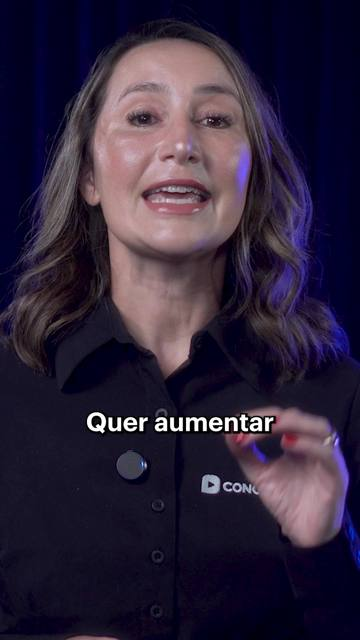
Concursos Ceisc
- O Concurso para Escrevente Técnico Judiciário do Tribunal de Justiça de São Paulo deve ter seu edital publicado em 2026.
- Já pensou ser Escrevente Técnico Judiciário do TJ-SP, atuar no maior tribunal da América Latina e receber mais de R$ 6 mil/mês?
- Aprove com Ceisc

Concursosmeucurso
- Se você está esperando o edital ser publicado para começar a estudar, talvez esteja perdendo a melhor oportunidade de conquistar sua aprovação.
- Education

Brabo Concursos

Concursos Ceisc
- Com reajuste de 8% o cargo no judiciário passa a ser mais valorizado. A partir de julho desse ano já entra em vigor,
- Um reajuste de 8% já foi aprovado, e o Judiciário ficou ainda mais atrativo.

Isaque Concursos
- Tenha tudo que você precisa para estudar em alto nível para qualquer TRT do Brasil com o Projeto TRT🔥
- Tenha organização e direcionamento para
- TRT: Estude em Alto Nível
- TRTs: Organização e Direcionamento
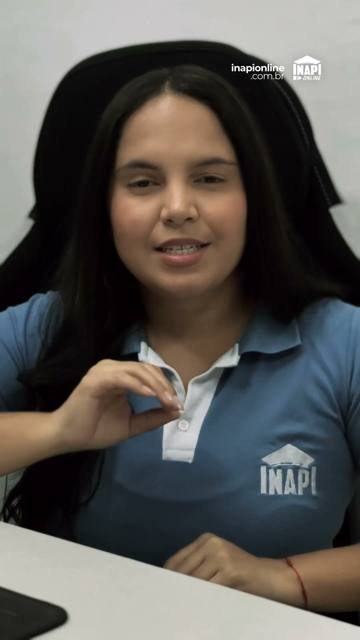
Instituto INAPI
- [ ⭐️ 4.9/5.0 ] Avaliação

Prime Curso
- Curso TRT 65% OFF

Hugo de Freitas
- O TJ-SP quase nunca avisa antes. Dessa vez, avisou. 👀
- Concurso TJ SP de Escrevente pode sair em breve.
- Hugo de Freitas | Concurso Público (@hugoconcursos) • Instagram photos and videos
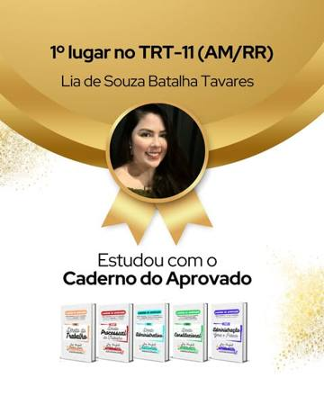
Simbora Concursos
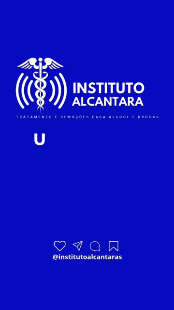
Junior Alcantara
- CLÍNICA DE REABILITAÇÃO

Concursosmeucurso
- Concursos com remuneração de até R$ 18 mil
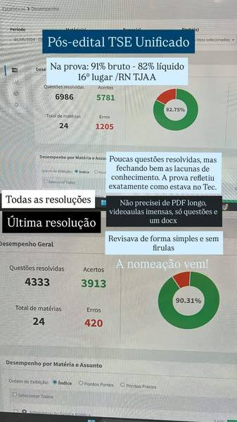
Eujeannribeiro
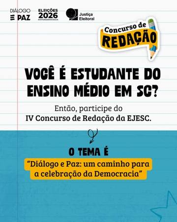
Tribunal Regional Eleitoral de Santa Catarina
- @trescjusbr Official: TikTok, Instagram, X | Linktree

Advocacia para Concursos - Mattozo & Ribeiro
- instagram.com
Mentoria Tribunal em Foco
- Converse conosco
Ofertas adjacentes (79)
Apareceram nas buscas e são de concurso, mas não citam os termos do foco.
Professor Fabiano Pereira

Caderno do Aprovado - Materiais para Concursos
- Talvez você já tenha escutado várias histórias assim:
- 📚 Conheça o Caderno do Aprovado e prepare-se em alto nível para os próximos concursos de tribunais.
- Comente PLANILHA para receber gratuitamente a minha planilha de conteúdo verticalizado indicando quais são os assuntos mais relevantes para estudar nesse período pré-edital.
- Lançados em fevereiro de 2025
- Lançados em janeiro de 2025
- Lançados em outubro de 2024
- Beto (José Humberto) - Caderno Do Aprovado - TRT/TST/TJ/MP (@cadernoaprovado) • Instagram photos and videos
- Simbora Concursos
Pratique Concursos
- <100
- Recentemente, foi publicado o novo edital do concurso público de Técnico de Controle Externo na Especialidade de Tecnologia da Informação do Tribunal de Contas do Estado de Goias (TCE GO) com 13 vagas e salário inicial d

Central de Concursos
- O TJ-SP Escrevente é uma grande oportunidade para quem busca estabilidade e carreira pública com nível médio.
- O concurso do Tribunal de Justiça de São Paulo (TJ-SP) é uma das maiores oportunidades para quem tem apenas o ensino médio completo. Além de um excelente salário inicial, você conquista estabilidade financeira, benefício
Metodo.Gafanhoto

Professor Hansk

Matheus Santos - Eu concursado

Ser Aprovado
- Concurso do TJAM
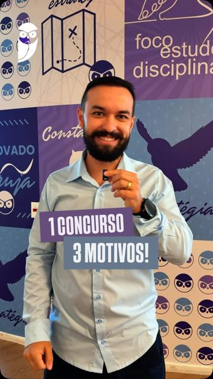
Estratégia Concursos
- Acesse aulas e materiais de estudo no Grupo de Estudos do TJ RR no Whatsapp.
- Acesse aulas e materiais de estudo no Grupo de Estudos do TCE AP no Whatsapp.
- 📢 O professor Herbert Almeida indica: vale a pena estudar para CGU e Tribunal de Contas da União!
- Grupo de Estudos TJ RR
- Grupo de Estudos TCE AP
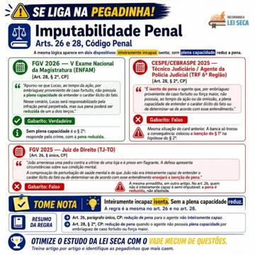
Decorando a Lei Seca Cursos Para Concursos E OAB
- O art. 30 do Código Penal é daqueles dispositivos curtos, mas que a banca adora explorar em prova objetiva.
- ⚠️ Uma palavra pode mudar completamente o gabarito da questão.
- O Código Penal usa a mesma técnica de redação em dois artigos diferentes, e as bancas cobram a diferença exatamente do mesmo jeito.

EG Raiz - I.A

Advogado de concurso

Pódio Tribunais

Alan Matos
- Mapa da Aprovação Concurso TCDF2026
Professor Rodrigo Marengo - Consultor Legislativo do Senado Federal aos 24
- Antes de perguntar no direct: as 5 objeções sobre o Combão, respondidas.
- 27 matérias escritas por um autor só, no mesmo padrão: 1 tópico por página, caixa Memorize, caixa Atenção e jurisprudência com número de julgado.
- Quem usa, aprova — frases reais de alunos, publicadas com autorização, do jeito que chegaram.
- Depoimentos reais de alunos
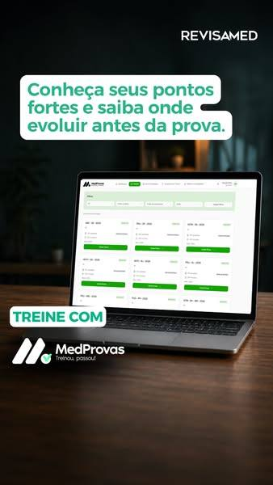
Grupo Revisamed

Victor Ribeiro
- Estude uma vez, se lembre para sempre

Gaby no Tribunal

Concursos Ceisc
- Mais um concurso para Oficial de Justiça do TJ-SP deve chegar em breve!
- A sua preparação para o TJ-SP exige foco e direcionamento.

Pódio Tribunais
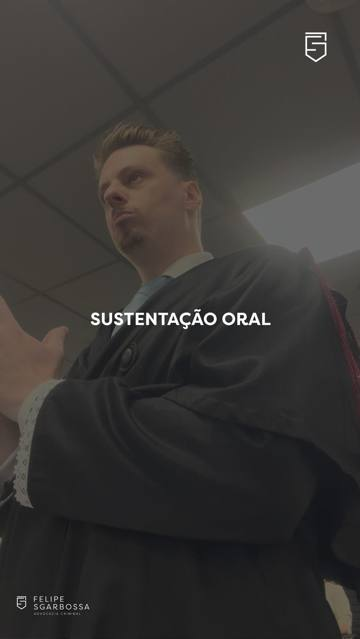
Felipe Sgarbossa Advocacia Criminal
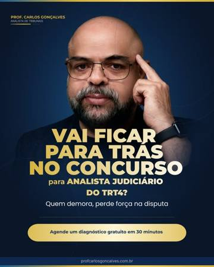
Prof.carlosgoncalves
- 90% dos candidatos a Analista de Tribunal estão cometendo um erro fatal neste exato momento: estudando de forma passiva e sem direção.
- Seja honesto com você mesmo: se a prova para Analista de Tribunal fosse no próximo domingo, você estaria pronto para assinar o termo de posse ou seria apenas mais um na lista de reprovados?
- Projeto Analista de Tribunais

IPOG Salvador

Tjteiros

Gazeta dos Concursos
- A maior leva de TRTs da última década está entrando na fila. 14 provas até o final de 2027 — uma atrás da outra.
- Qual o melhor concurso de tribunal pra você começar hoje?
- A enxurrada de TRTs começou
- Melhor tribunal pra começar hoje
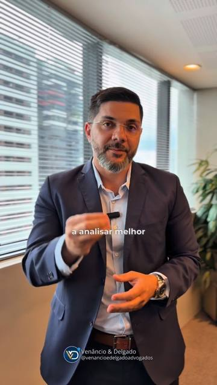
Venâncio & Delgado - Advogados
- ⚖️ Advocacia em concursos públicos: A importância da advocacia especializada nessa área!
- ⚖️ Foi eliminado em concurso público? Nem sempre a banca está certa.

Venâncio & Delgado - Advogados

Concursos Ceisc
- A sua oportunidade de atuar no estado do Rio Grande do Sul, pelo Tribunal Regional do Trabalho, está chegando!
- O TRT-4 pode estar prestes a anunciar um novo concurso!
- Garanta sua Vaga
Serviço Social para Concursos
- Direto na Questão aplicado a Banca AOCP Selecione: R$ 67,15
- Curso Avançado - Serviço Social para Concursos Selecione: R$ 327,40
Tucuju Bizurado Concursos
- Checkout Tutory

Joy Braga Concursos
- O modelo de cursinho tradicional foi feito pra você desistir. E está funcionando.
- Salário de R$ 8 a 10 mil, muita vaga de nível médio, segunda a sexta, 7 horas por dia.
- O cursinho não quer que você passe
- Tribunal paga R$ 8 mil. E poucos passam
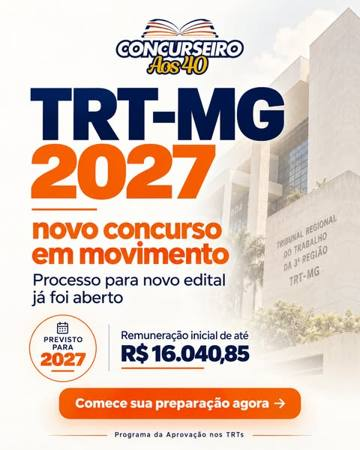
Concurseiro aos 40
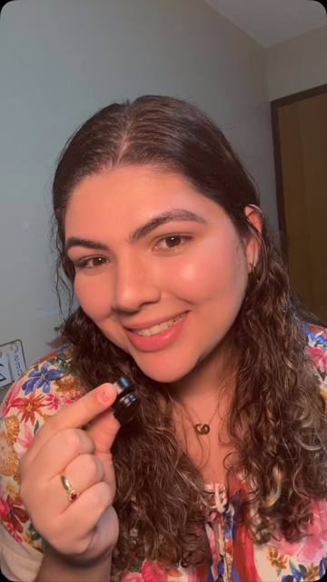
minhajornadadeconcurseira com Decorando a Lei Seca Cursos Para Concursos E OAB
- Ilimitada Vitalícia Dupla Ao incluir esta opção, o: R$ 447,00
- Ilimitada Vitalícia TRIPLA Ao incluir esta opção, você: R$ 15.999,80
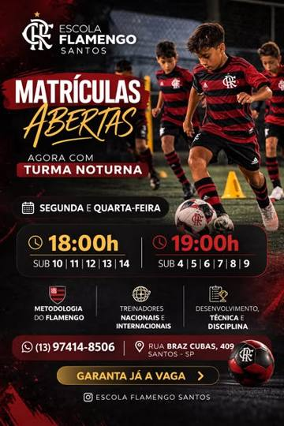
Escola Flamengo - Unid Santos

Concursos Ceisc
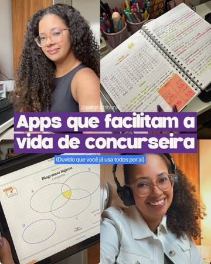
Gaby no Tribunal
- Gaby Ungareli | TJSP (@gabynotribunal) • Instagram photos and videos

Discursiva na Prática
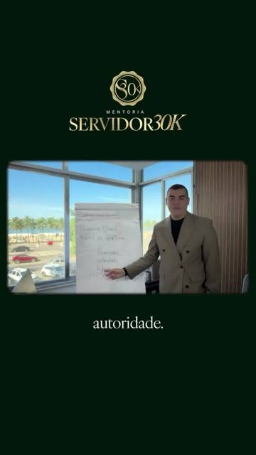
Douglas Prado - Servidor 30k
Rafael Amaral Adv

Fauth e Freitas Sociedade de Advogados com Adriane Fauth
- Fauth e Freitas Sociedade de Advogados

Brabo Editora
- Apostila Mestre em Questões TJ-SP

Professor Rodrigo Marengo - Consultor Legislativo do Senado Federal aos 24
- COMBO AUDITOR FISCAL

nomaderachel com Focus Concursos Públicos
- nomaderachel
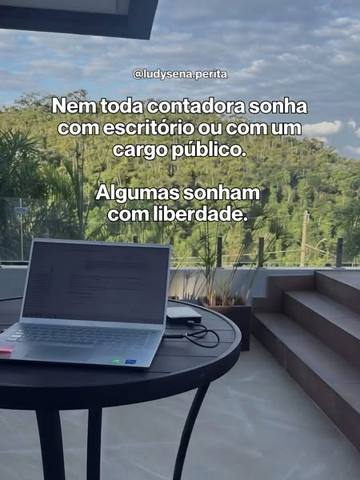
Ludy Sena

Professor Rodrigo Marengo - Consultor Legislativo do Senado Federal aos 24
- COMBO AUDITOR FISCAL
LH no pódio

Trteiros
Mege
- Concurcity - A Rede Social do concurseiro de carreira jurídica
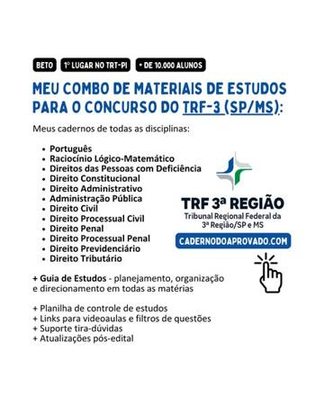
Caderno do Aprovado - Materiais para Concursos
- [REDAÇÃO IMBATÍVEL] Guia de redação dissertativa-argumentativa para concursos: R$ 149,00
- [COMBO MP-PE] Técnico Ministerial - Área Administrativa (Nível: R$ 497,00
- [COMBO TRT BRASIL] Técnico Judiciário - Área Adm.: R$ 597,00
- [COMBO TRT BRASIL] Analista Judiciário - Área Judiciária: R$ 647,00
- Combos TRF, TJ e MP – Caderno do Aprovado – Caderno do Aprovado – Materiais de estudos para concursos públicos

NEAF Concursos Públicos com tjserei
- Curso de Testes TJSP 2026: Aula Demonstrativa Grátis

Themas Cartórios
- Cursos preparatórios para concursos | Themas Cursos ®

Concurseiro Fora da Caixa
- ⭐ 4.8 | +85 mil alunos
Bruna Vieira
- 🎵 Passe estudando com música.

Professora Amanda Aires
- Economia para o TCU 2026
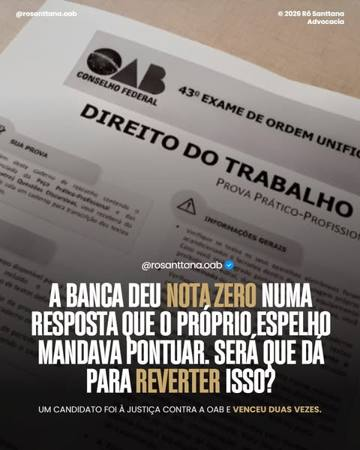
Rô Santtana - OAB
- Reprovado na 2ª Fase da OAB? · Rô Santtana Advogada
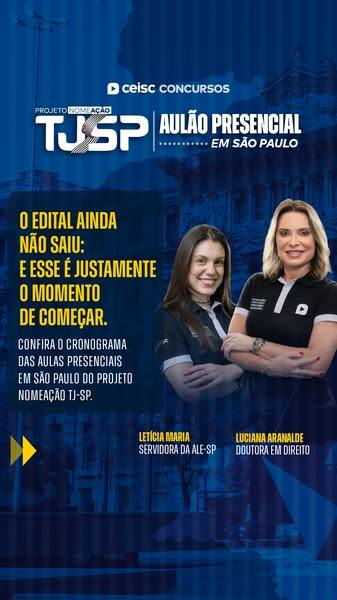
Concursos Ceisc

Nomade Rachel com Focus Concursos Públicos
- Nomade Rachel
Progresso Concursos
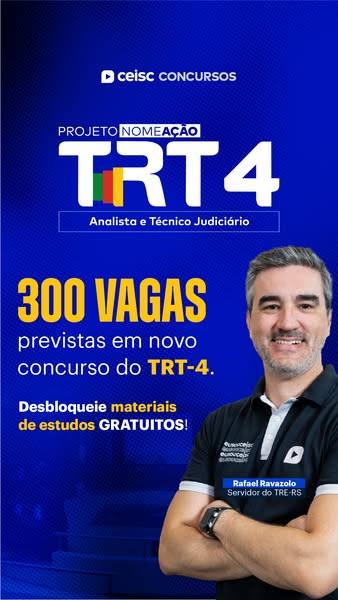
Concursos Ceisc

Treinar na Oficina
- Eleve seu nível como profissional
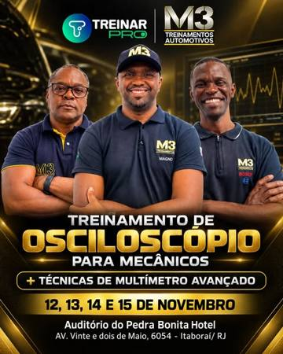
Treinar na Oficina
- Faça sua inscrição
Elevato Brasil Cursos e Treinamentos
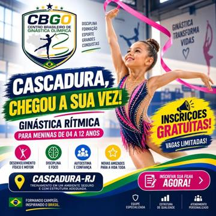
Centro Brasileiro de Ginástica Olímpica
- INSCRIÇÕES GRATUITAS!!
_rrautomoveis_
Local Imóveis Alto de Pinheiros
Fas Lex Treinamentos E Licitações Ltda
- Sua engenharia fora das licitacoes?
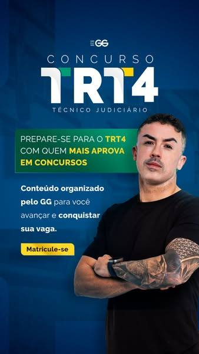
GG Concursos
- Curso TRT4 30% OFF
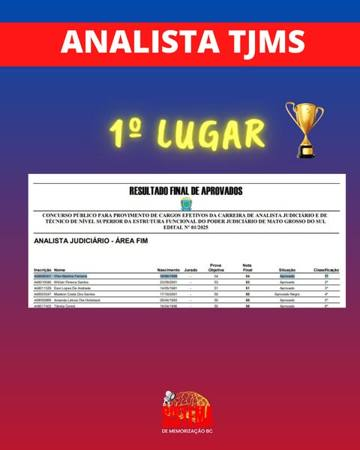
Memorização Bruno Campos Concursos
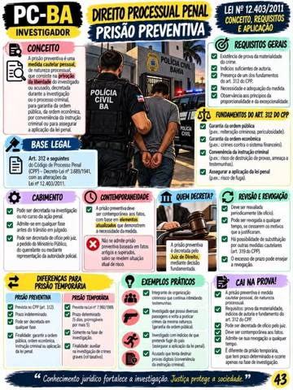
Aprovação na prova
- Converse conosco

Marco Cursos Preparatórios

Memoriza-aí Concursos
- Técnico de Enfermagem UNIOESTE - Revise em 1 dia!
Treine Subjetivas
- Não perca mais tempo!

Mentoria Próximo Nível
Dr. Thiago Braga

KAAIF Concursos
UniEVANGÉLICA
- Estude Direito na UniEVANGÉLICA
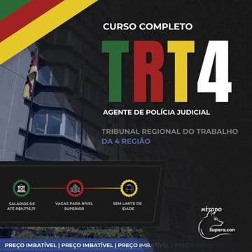
Método Supera.con

aprovados.dpero2025

Malditafcc
- Mateus Alves (@malditafcc) • Instagram photos and videos